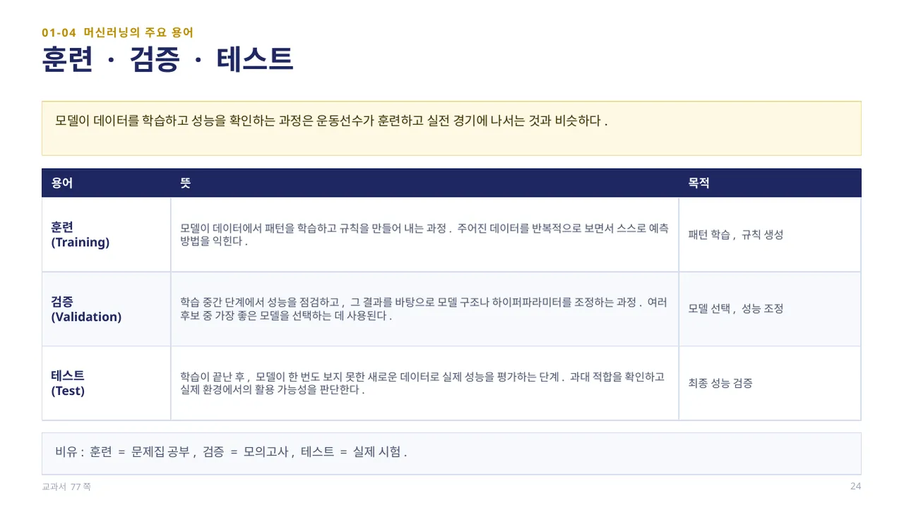
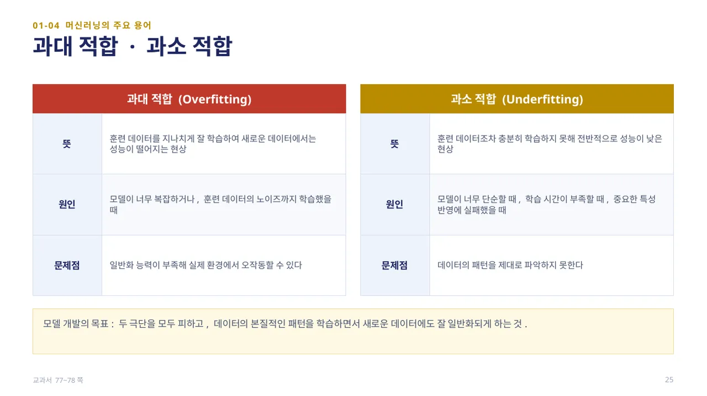
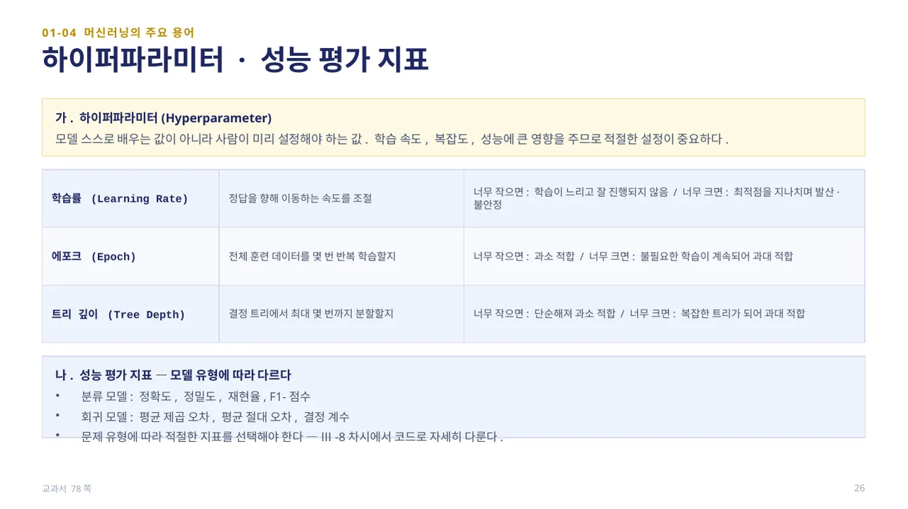
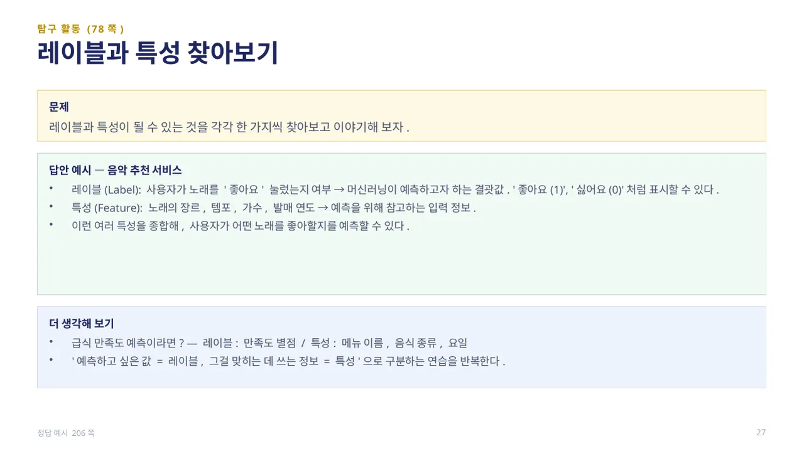

머신러닝의 데이터는 보통 엑셀 시트처럼 행과 열로 구성된 표(테이블) 형태로 정리되어 있습니다. 데이터 세트(Dataset)는 모델이 학습하거나 예측을 수행할 때 사용하는 전체 데이터의 묶음입니다(예: 친구들의 키·몸무게·혈액형·사는 곳·운동 여부가 모두 포함된 표 전체).
특성(Feature)은 데이터 세트에서 모델이 학습과 예측에 사용하는 개별 정보 항목(예: ‘키’, ‘몸무게’, ‘사는 곳’)이고, 레이블(Label)은 모델이 예측하거나 분류해야 하는 정답 또는 결괏값으로 지도 학습에만 있으며 ‘타깃(Target)’, ‘클래스(Class)’라고도 합니다(예: ‘합격/불합격’, ‘질병 여부’). 1학기 티처블 머신에서 클래스 이름을 붙였던 것이 바로 이 레이블입니다. (교과서 76쪽)

모델이 데이터를 학습하고 성능을 확인하는 과정은 운동선수가 훈련하고 실전 경기에 나서는 것과 비슷합니다. 훈련(Training)은 모델이 데이터에서 패턴을 학습하고 규칙을 만들어 내는 과정이고, 검증(Validation)은 학습 중간 단계에서 성능을 점검해 모델 구조나 하이퍼파라미터를 조정하며 여러 후보 중 가장 좋은 모델을 선택하는 데 사용됩니다.
테스트(Test)는 학습이 끝난 후, 모델이 한 번도 보지 못한 새로운 데이터로 실제 성능을 평가하는 단계로, 과대 적합을 확인하고 실제 환경에서의 활용 가능성을 판단합니다. 비유하면 훈련은 문제집 공부, 검증은 모의고사, 테스트는 실제 시험입니다. (교과서 77쪽)

과대 적합(Overfitting)은 훈련 데이터를 지나치게 잘 학습하여 새로운 데이터에서는 성능이 떨어지는 현상입니다. 모델이 너무 복잡하거나 훈련 데이터의 노이즈까지 학습했을 때 발생하며, 일반화 능력이 부족해 실제 환경에서 오작동할 수 있습니다.
과소 적합(Underfitting)은 훈련 데이터조차 충분히 학습하지 못해 전반적으로 성능이 낮은 현상으로, 모델이 너무 단순하거나 학습 시간이 부족하거나 중요한 특성을 반영하지 못했을 때 나타납니다. 모델 개발의 목표는 이 두 극단을 모두 피하고 데이터의 본질적인 패턴을 학습하면서 새로운 데이터에도 잘 일반화되게 하는 것입니다. (교과서 77~78쪽)

하이퍼파라미터(Hyperparameter)는 모델 스스로 배우는 값이 아니라 사람이 미리 설정해야 하는 값입니다. 예를 들어 학습률(너무 작으면 학습이 느리고, 너무 크면 최적점을 지나치며 불안정), 에포크(너무 작으면 과소 적합, 너무 크면 과대 적합), 결정 트리의 트리 깊이(너무 작으면 과소 적합, 너무 크면 과대 적합)가 있습니다.
성능 평가 지표는 모델 유형에 따라 다릅니다. 분류 모델은 정확도·정밀도·재현율·F1-점수를, 회귀 모델은 평균 제곱 오차·평균 절대 오차·결정 계수를 사용합니다. 문제 유형에 따라 적절한 지표를 선택해야 하며, Ⅲ-8차시에서 코드로 자세히 다룹니다. (교과서 78쪽)

탐구 활동(78쪽): 레이블과 특성이 될 수 있는 것을 각각 한 가지씩 찾아보고 이야기해 봅니다.
답안 예시 — 음악 추천 서비스: 레이블(Label)은 사용자가 노래를 ‘좋아요’ 눌렀는지 여부처럼 머신러닝이 예측하고자 하는 결괏값이고, 특성(Feature)은 노래의 장르·템포·가수·발매 연도처럼 예측을 위해 참고하는 입력 정보입니다. 급식 만족도 예측이라면 레이블은 만족도 별점, 특성은 메뉴 이름·음식 종류·요일이 됩니다. ‘예측하고 싶은 값 = 레이블, 그걸 맞히는 데 쓰는 정보 = 특성’으로 구분하는 연습입니다. (정답 예시 206쪽)
 인공지능 파이썬 실무
인공지능 파이썬 실무